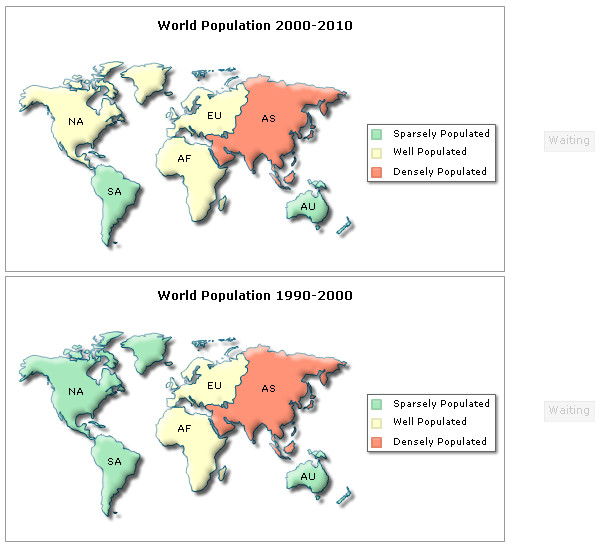
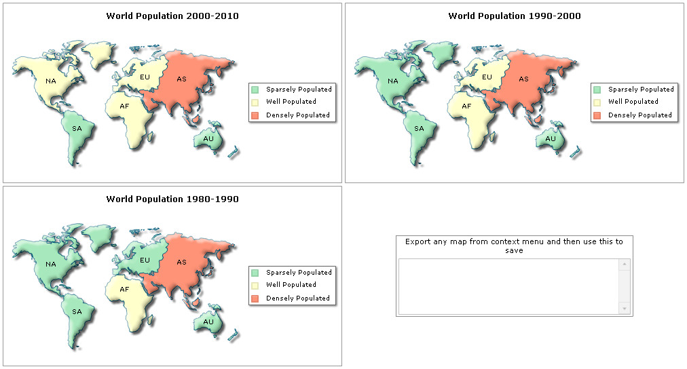
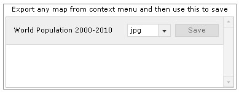
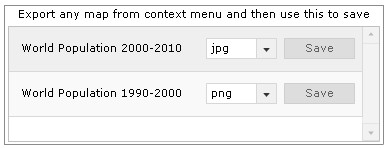
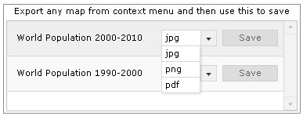
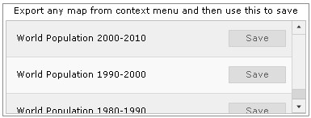

| Exporting multiple maps | ||||||||||||||||||||||||
When you've multiple maps present on your page, there are three ways to export them using Export Component:
|
||||||||||||||||||||||||
|
||||||||||||||||||||||||
| In this page, we explain the first two methods - One to One and Many to One. Let's start with the simpler one - One to One Mode. |
||||||||||||||||||||||||
| One to One Mode | ||||||||||||||||||||||||
|
This is the simplest saving mode when you've multiple maps in your page. In this mode, you basically create one instance of Export Component per map, and link the same in map's XML. Consider the XML code for 2 maps below: Map 1: <map caption='World Population 2000-2010' borderColor='005879' fillColor='D7F4FF' numberSuffix=' Mill.' includeValueInLabels='0' labelSepChar=': ' baseFontSize='9' exportEnabled='1' exportAtClient='1' exportHandler='fcExporter1'> <data> <entity id='NA' value='515' /> <entity id='SA' value='373' /> <entity id='AS' value='3875' /> <entity id='EU' value='727' /> <entity id='AF' value='885' /> <entity id='AU' value='32' /> </data> </map> Map 2: <map caption='World Population 1990-2000' borderColor='005879' fillColor='D7F4FF' numberSuffix=' Mill.' includeValueInLabels='0' labelSepChar=': ' baseFontSize='9' exportEnabled='1' exportAtClient='1' exportHandler='fcExporter2'> <data> <entity id='NA' value='498' /> <entity id='SA' value='369' /> <entity id='AS' value='3800' /> <entity id='EU' value='721' /> <entity id='AF' value='880' /> <entity id='AU' value='31' /> </data> </map> |
||||||||||||||||||||||||
|
Note that the only difference between the two XMLs is reference to client-side Export Handler - namely fcExporter1 and fcExporter2. And the HTML code that defines these two maps and their handlers can be listed as under: |
||||||||||||||||||||||||
<html>
<head>
<script language="JavaScript" src="../../Maps/FusionCharts.js"></script>
<script language="JavaScript" src="../../Maps/FusionChartsExportComponent.js"></script>
</head>
<body bgcolor="#ffffff">
<div id="mapdiv1" align="center">The map will appear within this DIV. This text will be replaced by the map.</div>
<script type="text/javascript">
var myMap1 = new FusionCharts("../../Maps/FCMap_World.swf", "myMapId1", "500", "300", "0", "1");
myMap1.setXMLUrl("SimpleExample.xml");
myMap1.render("mapdiv1");
</script>
<div id="fcexpDiv" align="center">FusionCharts Export Handler Component</div>
<script type="text/javascript">
var myExportComponent = new FusionChartsExportObject("fcExporter1", "../../Maps/FCExporter.swf");
myExportComponent.Render("fcexpDiv");
</script>
<div id="mapdiv2" align="center">The map will appear within this DIV. This text will be replaced by the map.</div>
<script type="text/javascript">
var myMap2 = new FusionCharts("../../Maps/FCMap_World.swf", "myMapId2", "500", "300", "0", "1");
myMap2.setXMLUrl("SimpleExample2.xml");
myMap2.render("mapdiv2");
</script>
<div id="fcexpDiv2" align="center">FusionCharts Export Handler Component</div>
<script type="text/javascript">
var myExportComponent2 = new FusionChartsExportObject("fcExporter2", "../../Maps/FCExporter.swf");
myExportComponent2.Render("fcexpDiv2");
</script>
</body>
</html>
|
||||||||||||||||||||||||
Here, we've created:
When you now run this page, you'll see 2 maps with their own exporter component. The components allow you to download each map's individual export file. Shown below is what the page looks like: |
||||||||||||||||||||||||
|  | ||||||||||||||||||||||||
|
See it live! Using this method, you can have any number of maps (with their respective export handler instance) in a single web page. Just make sure to link them correctly using the map XML. Let us now see how to use a single export component for multiple maps. |
||||||||||||||||||||||||
| Many to one Mode | ||||||||||||||||||||||||
To enable a single export component handle multiple maps, we need to:
Shown below is an example. For this example, all the maps use the same export related attributes. Note that exportHandler of all maps refer to fcExporter1. |
||||||||||||||||||||||||
<map exportEnabled='1' exportAtClient='1' exportHandler='fcExporter1' ...> ... </map> |
||||||||||||||||||||||||
|
The HTML code contains the following: |
||||||||||||||||||||||||
<html>
<head>
<script language="JavaScript" src="../../Maps/FusionCharts.js"></script>
<script language="JavaScript" src="../../Maps/FusionChartsExportComponent.js"></script>
</head>
<body bgcolor="#ffffff">
<div id="mapdiv1" align="center">The map will appear within this DIV. This text will be replaced by the map.</div>
<script type="text/javascript">
var myMap1 = new FusionCharts("../../Maps/FCMap_World.swf", "myMapId1", "500", "266", "0", "1");
myMap1.setXMLUrl("WP-2000-2010.xml");
myMap1.render("mapdiv1");
</script>
<div id="mapdiv2" align="center">The map will appear within this DIV. This text will be replaced by the map.</div>
<script type="text/javascript">
var myMap2 = new FusionCharts("../../Maps/FCMap_World.swf", "myMapId2", "500", "266", "0", "1");
myMap2.setXMLUrl("WP-1990-2000.xml");
myMap2.render("mapdiv2");
</script>
<div id="mapdiv3" align="center">The map will appear within this DIV. This text will be replaced by the map.</div>
<script type="text/javascript">
var myMap3 = new FusionCharts("../../Maps/FCMap_World.swf", "myMapId3", "500", "266", "0", "1");
myMap3.setXMLUrl("WP-1980-1990.xml");
myMap3.render("mapdiv3");
</script>
<div id="fcexpDiv" align="center">FusionCharts Export Handler Component</div>
<script type="text/javascript">
var myExportComponent = new FusionChartsExportObject("fcExporter1", "../../Maps/FCExporter.swf");
//Set configuration
//Full Mode
myExportComponent.componentAttributes.fullMode = '1';
//Set saving type to individual
myExportComponent.componentAttributes.saveMode = 'individual';
//Show allowed export format drop-down
myExportComponent.componentAttributes.showAllowedTypes = '1';
//Width and height
myExportComponent.componentAttributes.width = '380';
myExportComponent.componentAttributes.height = '140';
//Message - caption of export component
myExportComponent.componentAttributes.showMessage = '1';
myExportComponent.componentAttributes.message = 'Export any map from context menu and then use this to save';
//Set it to show allowed format types as well
myExportComponent.Render("fcexpDiv");
</script>
</body>
</html> |
||||||||||||||||||||||||
In this code, we've:
We've set the component to show in full mode. Additionally, we've set saveMode to individual, which is necessary for Many-to-one Mode. Since we want the users to be able to select the saving format for each map's export output, we've also set showAllowedTypes to 1. Some other cosmetic configuration parameters have also been set. When you now run this page, you'll first see three maps and an empty export component on page, as shown below:  See it live! When you now export any map using its context menu, after export, the map gets added to the exporter component, as shown below.  As you export other maps, they too get added to the component.  The drop-down box, by default, shows the format which the user selected as output format for the map in its context menu. However, for each map, the user can choose a different output format and click on Save button to save the map, as shown below.  If you, however, do not want the users to be able to select output format here, you can set: myExportComponent.componentAttributes.showAllowedTypes = '0'; And, this will result in:  The cosmetics of this UI can be extensively configured by specifying the same in your HTML. Please refer to the page Component UI Customization to see the entire list. |